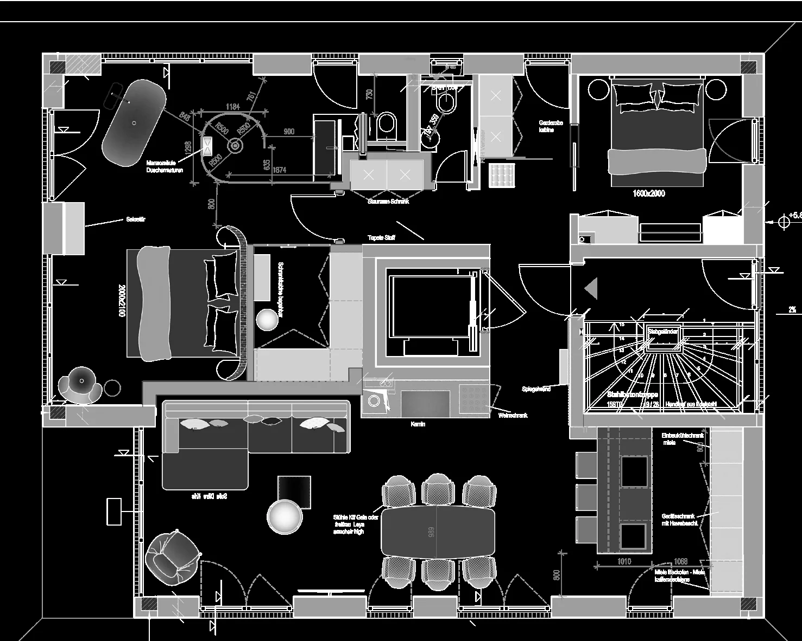

Private Residence — Bolzano
Interior Design · Design Development · Custom Furniture · Technical Planning · Visualization


Next project
ContinueInterior Design · Design Development · Custom Furniture · Technical Planning · Visualization
